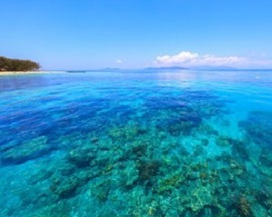
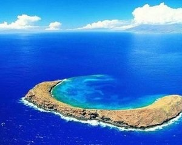
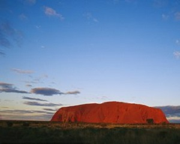
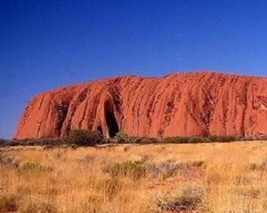
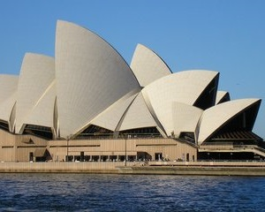
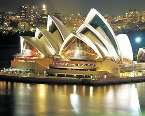
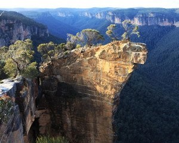
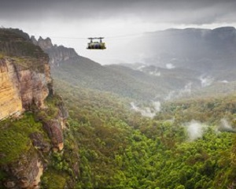

morly旅游网
1788年至1900年，曾是英国的殖民地。1901年，殖民统治结束，成为一个独立的联邦国家。澳大利亚一词，意即“南方大陆”，欧洲人在17世纪初叶发现这块大陆时，误以为是一块直通南极的陆地，故取名“澳大利亚”，Australia 即由拉丁文 terraaustralis （南方的土地）变化而来。澳大利亚四面环海，是世界上唯一一个国土覆盖整个大陆的国家，拥有很多自己特有的动植物和自然景观。
大堡礁
举世闻名的澳大利亚大堡礁（英文：GreatBarrierReef），早在1981年就被列入“世界保护遗产”名录。位于澳大利亚东北部珊瑚海的大堡礁是世界上最大的珊瑚礁群，它绵延2000多公里。这里不仅有世界上最大的珊瑚礁和珊瑚岛，还栖息着400多种海洋软体动物和1500多种鱼类，其中很多是世界濒危物种。美丽的凯恩斯是前往大堡礁的必经之路。
大堡礁有四百种活的珊瑚，颜色从一般的蓝色、棕色到错综复杂、难以置信的粉红及紫海扇，简直是个五彩斑烂的神奇世界。可乘坐轮船到翡翠岛进行浮潜、深浅等项目，也可以做半潜水船和玻璃船欣赏珊瑚、水母及小鱼。
 艾尔斯岩石
澳大利亚艾尔斯岩石(Ayers Rock)(经度131.036纬度-25.348)，又名乌鲁鲁巨石。艾尔斯岩高348米，长3000米，基围周长约9.4公里，东高宽而西低狭，是世界最大的整体岩石(体积虽巨，只是独块石头)。它气势雄峻，犹如一座超越时空的自然纪念碑，突兀于茫茫荒原之上，在耀眼的阳光下散发出迷人的光辉。 乌鲁鲁-卡塔丘塔国家公园是国际公认的世界遗产地区。它是联合国教科文组织(UNESCO)认定的世界文化和自然双遗产。1987年首次被列入世界遗产，其地理构造，罕见的动植物和超乎寻常的自然美景得到充分肯定。1994年，它又被列为文化遗产，乌鲁鲁传统主人阿南古人的传统价值体系得到了肯定。阿南古人是世界上最古老的族群之一。
 悉尼歌剧院
悉尼歌剧院(Sydney Opera House)，位于悉尼市区北部，是悉尼市地标建筑物，由丹麦建筑师约恩·乌松(Jorn Utzon)设计，一座贝壳形屋顶下方是结合剧院和厅室的水上综合建筑。歌剧院内部建筑结构则是仿效玛雅文化和阿兹特克神庙。该建筑1959年3月开始动工，于1973年10月20日正式竣工交付使用，共耗时14年 。 悉尼歌剧院是澳大利亚的地标建筑，也是20世纪最具特色的建筑之一，2007年被联合国教科文组织评为世界文化遗产。
 韩国饮食：
澳大利亚旅游去蓝山，位于悉尼西部，被称为“丛林步行者的天堂”。因为漫山都是一种叫“尤加利”的桉树在阳光下泛着蓝光而得名。开车上山，先走铁路，一种45°左右的滑车，几分钟便直下山底。再坐索道，一种顺山势缓慢上升的缆车，又重上山顶。然后走一段人行道，在雨林中漫步，感受当年矿工运煤的艰辛。最后选择拥有透明车底的航线，悬浮于峡谷之间，俯瞰悬崖瀑布，远眺“三姐妹峰”。同在蓝山，由于每一次交通工具的选择各异，便拥有了不一样的感官体验，所谓“远近高低各不同”，正是这种意境。
 内容整理至网络，如有侵权，请联系我们！1255394075@qq.com